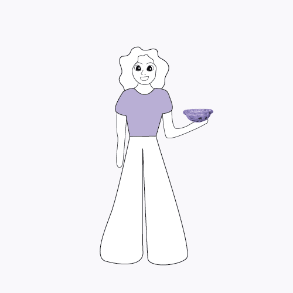
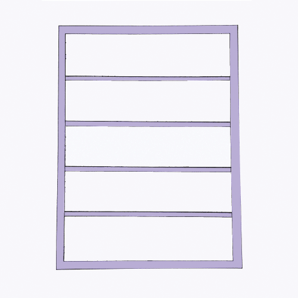
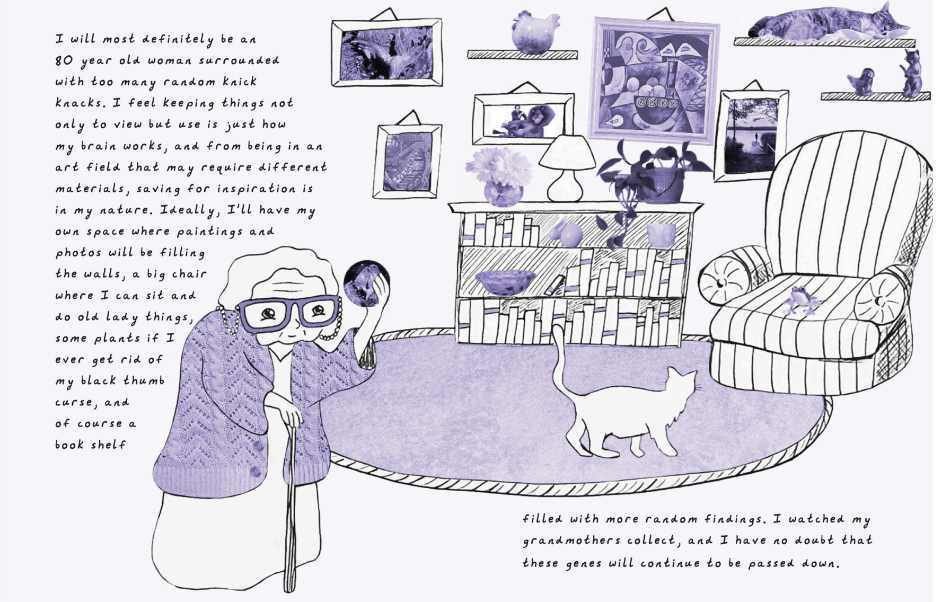
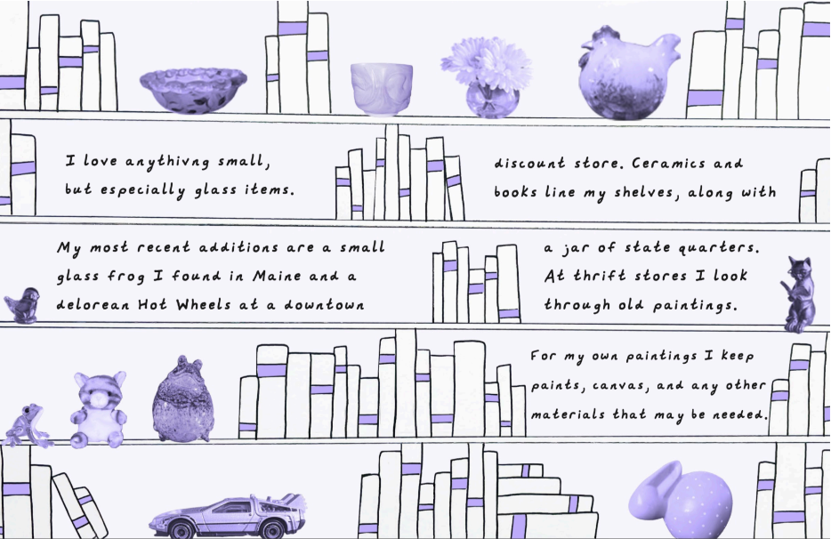

Anna Kippenberger
My Daily Collection
A story about my need to collect, this is a snippet into the items that are constantly around me. Featuring GIFs and pages of my story, this follows my growing collection over the years and how it'll never end. This project combines both physical and digital elements along with my own typeface.


